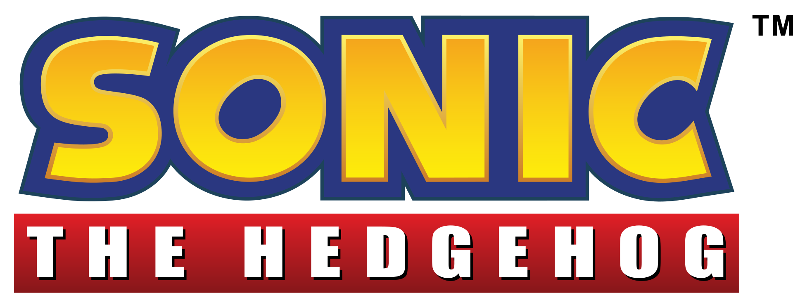

Sonic the Hedgehog[a] é uma franquia de jogos eletrônicos de plataforma criada por Yuji Naka e Naoto Oshima da equipe Sonic Team, da Sega, sendo atualmente administrada por Takashi Iizuka. O primeiro jogo da série Sonic, lançado em 1991, foi concebido pela divisão da Sega, Sonic Team após um pedido para um novo mascote. O título foi um sucesso, e foi renovado para várias sequelas, que levaram a Sega a liderança no rumo dos consoles de video-game da era 16-bit do começo até a metade dos anos 90.[1] Atualmente, é uma das franquias mais famosas e mais lucrativas da indústria dos videogames.[2] A franquia é protagonizada por Sonic, o Ouriço, que normalmente junto com seus amigos como a raposa Tails e o equidna Knuckles, tem que parar os planos de dominação mundial do vilão Dr. Eggman.
Enquanto os primeiros jogos da série eram jogos de plataforma em side-scrolling, posteriormente os jogos da série foram expandidos em vários outros gêneros e sub-séries, como o jogo de esporte Mario & Sonic at the Olympic Games (desenvolvido em parceria com a Nintendo), a série Sonic Boom e o jogo de corrida Sonic & Sega All-Stars Racing. Até 2016, a série vendeu mais de 80 milhões de cópias físicas de jogos,[3] e mais de 350 milhões de unidades quando combinados com relançamentos e downloads para celulares.[4] Fora dos video-games, a franquia também já foi divulgada em outras mídias, incluindo desenhos animados, animes e uma longa série de histórias em quadrinhos, que foi reconhecida como a mais longa história em quadrinhos baseada em um video-game já publicada pelo Guinness World Record.

Quase todos os jogos da série apresentam um ouriço antropomórfico azul chamado Sonic como o personagem do jogador central e protagonista. Os jogos detalham a tentativa de Sonic e seus aliados de salvar o mundo de várias ameaças, principalmente o gênio do mal Dr. Ivo "Eggman" Robotnik, o antagonista principal da série. O objetivo principal de Robotnik é governar o mundo; para conseguir isso, ele geralmente tenta destruir Sonic e adquirir as poderosas Esmeraldas do Caos.
Na série principal, a jogabilidade dentro dos jogos é dividida em duas: 2D (geralmente em plataforma) e 3D. Na jogabilidade 2D, predominante nos jogos mais antigos do mascote, você controla o Sonic horizontalmente e pula nos inimigos para destruí-los, além disso, os jogos ainda tem como elemento recorrente os anéis, que são fonte de energia ao personagem. Quando é pego um determinado número deles, o jogador poderá acessar os Special Stages, fases bônus onde é possível coletar 6/7 pedras mágicas, chamadas de Esmeraldas do Caos, que são responsáveis por dar super poderes ao ouriço, o transformando em Super Sonic, que tem a habilidade de voar, correr mais rápido, e ser invencível apenas sendo derrotado ao cair em um buraco, afogado ou sendo pressionado contra dois espinhos/plataformas que movem se. Se o jogador coletar todas elas, será contemplado com o final verdadeiro.
Outro elemento na jogabilidade recorrente nos jogos antigos são os itens: monitores capazes de dar poderes para Sonic, como um escudo protetor, ou até uma vida extra. O jogo também foi o primeiro na história dos videogames a estabelecer o sistema de salvar o jogo, os chamados save states, onde o jogador, quando morre ou é derrotado, volta ao ponto onde parou.[carece de fontes] O jogador terá 10 minutos para terminar de fase, caso ao contrário, será dada a tela de Time Over. No início, o jogador tem 3 chances para completar a fase, mas é possível ganhar mais vidas, já que a cada vez que são pegos 100 anéis, uma vida é dada ao jogador, outro modo também é de pegar um monitor de vida. O jogador também tem um contador de pontos, pegos quando se mata um inimigo, passando em um limite estipulado de tempo, ou pelo número de anéis que é multiplicado por 100 pontos. Porém, Sonic não é invencível, ele pode ser morto se: for esmagado, cair em um abismo, afogado (somente possível em fases aquáticas, onde o jogador pode se manter vivo usando bolhas de ar presentes em vários pontos da fase), e ser tocado por um inimigo, neste caso, se tiver um monitor de escudo, ele será desprotegido, se tiver com anéis, perderá todos eles, com a chance de recuperar alguns, e se não tiver nenhum, morrerá, perdendo uma vida. Quando o contador de vidas chegar a 0, será dada a tela de Fim de jogo, excetuando se ele tiver conseguido um continue, que são 3 vidas extras conseguidas após pegar 50 anéis em um Special Stage ou ganhando 30 mil pontos.